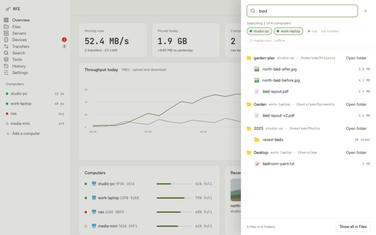
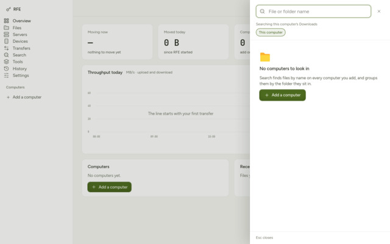
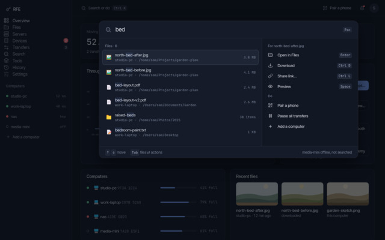
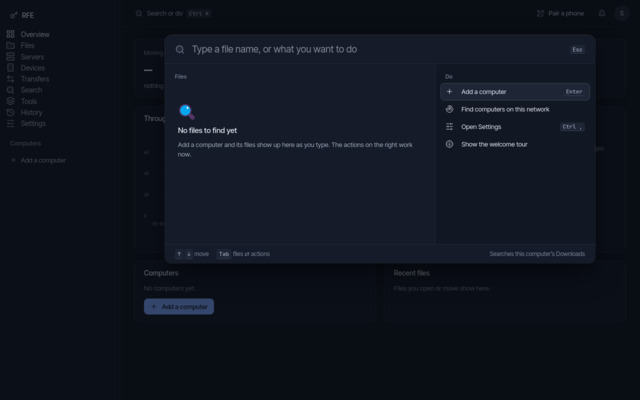
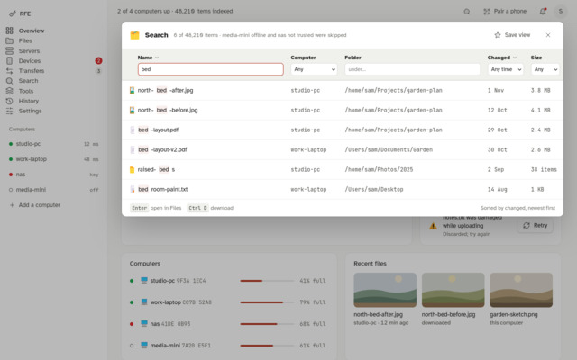
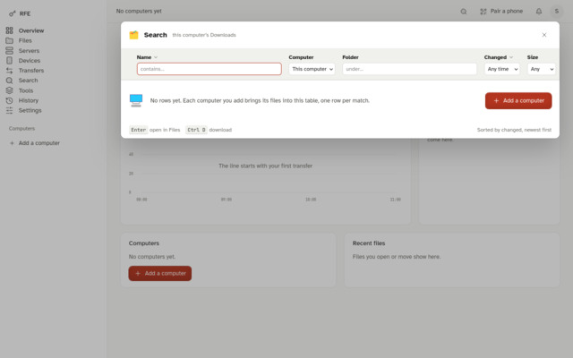
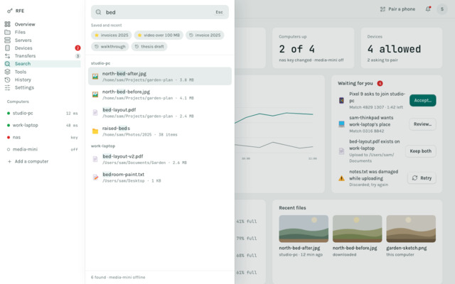
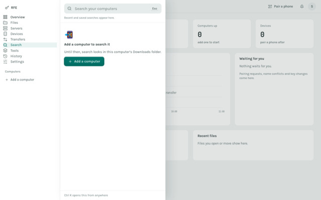
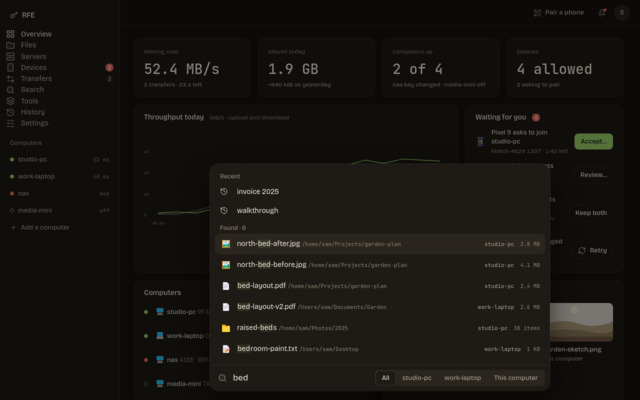
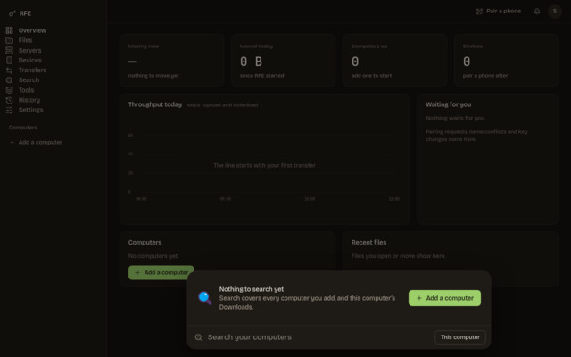

RFE desktop, v4: ten search menus on a fixed app
Fixed in all ten: navigation (v2 12), Files (v2 11), Settings (v2 15), Overview (v3 2), Servers, Devices and Transfers with the inspector on the right (v3 4), Tools (v3 2), and History with filters on every field. No search bar in any top bar: Search, Ctrl K and / open the search menu, which is what each design does differently, along with its colours and top bar. Thumbnails show the search menu open, full of data (left) and empty, first run (right). In a design, the strip switches every frame between the search menu, Overview, History, Servers and pairing.
01 · Lantern — a search window with a preview of the highlighted fileSearch is a window over the page. Results are grouped by computer, and the highlighted one shows on the right with its preview and the three things you do with a found file: open it where it lives, download it, share it.02 · Slate — a dropdown under the search icon, filters as tokens in the fieldSearch drops from its icon like any other menu and stays small. Filters are tokens inside the field (where, what kind, when), each one a menu; Add filter offers the rest. The full list opens in Files.03 · Sentence — search written as a sentence you fill inThe search reads as a sentence: find anything named bed on every computer, changed any time. Each underlined word is a menu, so the filters explain themselves. The sheet drops from the top of the page.04 · Darkroom — pictures shown as pictures, kind chips with countsA dark room for people who keep photos and video on their PCs. Search shows what it found by kind: pictures as a contact strip, everything else as rows. Each kind chip carries its count so you know before you click.05 · Facets — a wide sheet: filters with counts, results, saved searchesFor people who search a lot. The sheet opens under the top bar across the page: on the left every filter with how many results it keeps, in the middle the results as a table, on the right your saved and recent searches.








